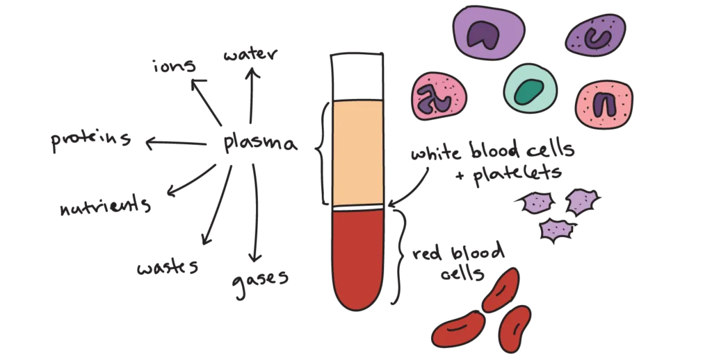
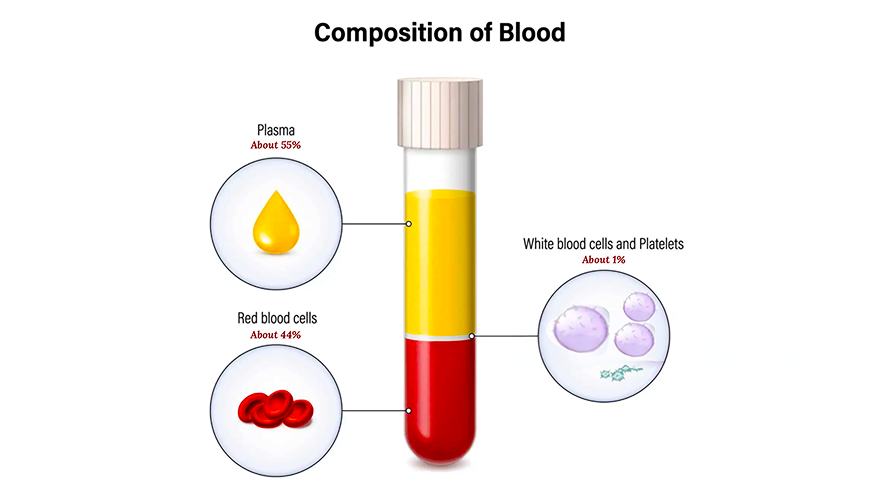
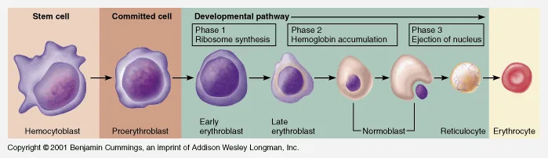
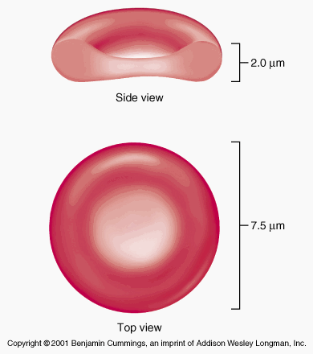
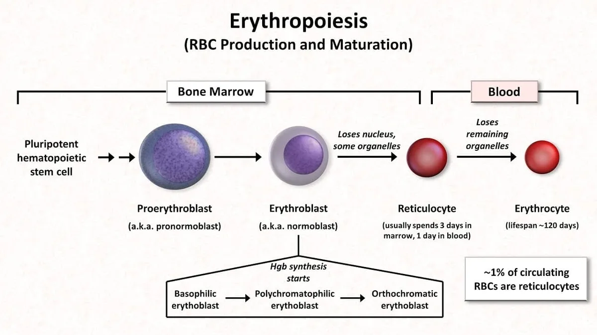
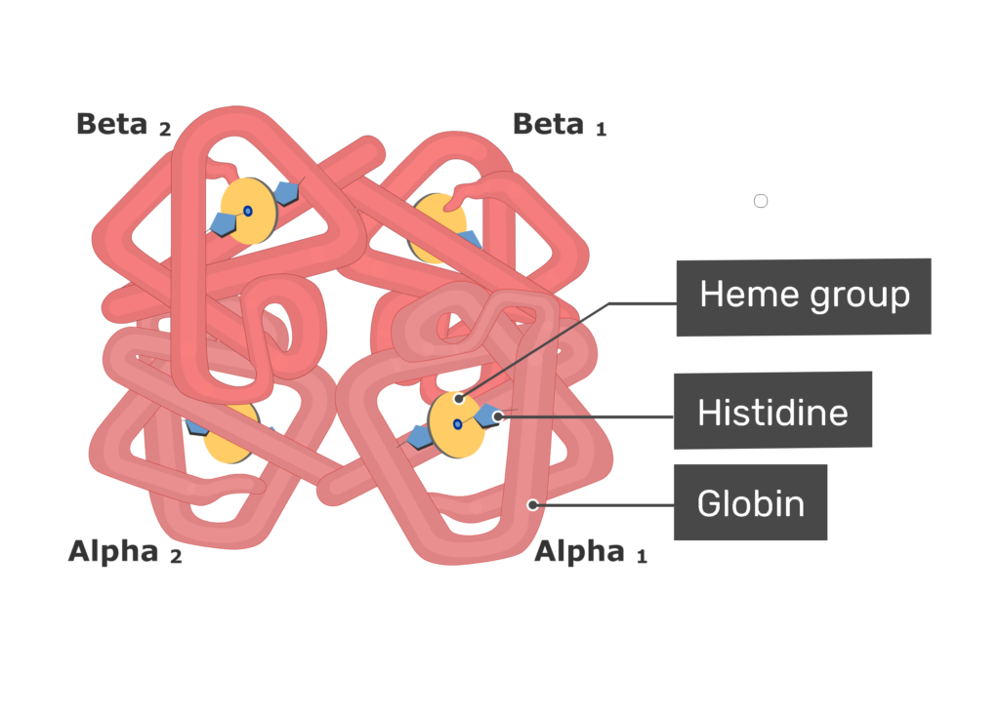

Expanded Nursing Uganda Explanation
Composition and role of the health facility team should be understood beyond a short definition. Link the concept to patient history, focused assessment, common risks, nursing priorities, documentation and evaluation of outcomes.
Contents — 39 sections (tap to expand)
01 Introduction
Nursing has been called the oldest of the arts and the youngest of the professions.
The term ‘nurse’ evolved from the Latin word nutrix which means ‘nourishing’ and the word nursing comes also from the Latin word nutrix meaning to ‘nourish’ or ‘cherish’. Nourish means to ‘supply that which is necessary for life’.
Today nursing emerged as a learned profession that is both a science and art . Science is the observation, identification, description, experimental investigation and theoretical explanation of natural phenomena (it is a body of knowledge). Art is the application of knowledge and skill to individualized action.
02 History of Nursing
Nursing originated with the desire to nurture, nourish, to provide comfort, care and assurance to the sick children, the ill family and eventually entire tribes. The 1 st known nurse is deaconess Phoebe mentioned in Romans 16:1, who was sent to Rome by St Paul as the visiting nurse to take care of the sick, both women and men during the early years of the Christian church.
Before the foundation of modern nursing, nuns and the military often provided nursing-like services.
The Christian churches have been long term patrons of nursing and influential in the development of the ethics of modern nursing. Elsewhere, other nursing traditions developed such as in Islam.
Early nursing was not recognized and respected but the declaration of Christianity as accepted religion in the Roman Empire drove an expansion of the provision of care which led to its recognition.
03 History of Nursing in Uganda
In 1852, Florence Nightingale started nursing in hospital setting due to wars and prevailing unemployment for the women in UK.
In 1853, Nightingale, founder of modern nursing, was associated to the beginning of nursing because she was instrumental in establishing sanitary conditions and reducing mortality rates during the Crimean war at the barracks hospital in Turkey from 42.7% to 22% in 6 months.
Florence Nightingale believed that nursing was started in 1810s before that there was poor knowledge of medical and surgical infection and prevention. Surgery was confined to emergency amputation and this had a terrible mortality rate due to poor conditions.
In 1855, she put her theory of nursing and hospital experience into writing so that her system could be continued and therefore Nightingale introduced reforms that changed the care of the sick throughout the world.
In 1860s, she opened the Nightingale training school for nurses in London at St Thomas hospital . She was able to train them with the books and notes she wrote on nursing and hospitals during her experience.
This inspired the opening of the US schools based on her model and all countries adopted the Nightingale format. Helped by missionaries, nursing found its way into Africa and to Uganda by Lady Catherine Cook .
Note: Florence Nightingale felt that she was leading a religious movement therefore a nurse must be dedicated in a religious way as it is a calling.
She inspired such a spirit of devotion up to now in her followers.
The group was entirely female and so the general public has thought of nursing as a woman’s work ever since.
Male nurses were 1 st documented in practicing primitive nursing during the 17 th century. It was during this time in history that men and women provided nursing care while serving punishment.
Mrs. Bedford Fenwick realized that there was a distinct knowledgeable body she believed that she could turn into profession. She also believed that those who trained a qualified standard would allow nursing to evolve as a profession. Thus up to today, worldwide one must undergo prescribed syllabus of theory and practical education to be recognized as a nurse.
04 NIGHTINGALE’S PLEDGE
''I solemnly pledge myself before God And in the presence of this assembly To pass my life in purity And to practice my profession faithfully I will abstain from whatever is Deleterious and mischievous And will not take or knowingly Administer any harmful drug . I will do all in my power to maintain And elevate the standard of my profession And will hold in confidence . All personal Matter committed to my keeping And all family affairs coming to my Knowledge in practice of my calling With loyalty I will endeavour to aid The physician in his work And devote myself to the welfare Of those committed to my care.''
05 Definition of Some Terms
Here are some key terms you will encounter in nursing:
- Nursing: Is defined as the unique function of the nurse to care and nurture the individual, sick or well in the performance of those activities contributing to health or its recovery or peaceful death, that s/he would perform unaided if s/he had the necessary strength, will or knowledge to do so.(international council of nurses, 1973)
- Nurse: Is a person who is qualified in the art and science of nursing and meets certain prescribed standards of education and clinical competence. Or Is a trained person to look after the sick or well individuals to perform those activities they cannot do on their own.
- Health: Is a dynamic state in which an individual adapts to internal and external environment so that there is a state of physical, emotional intellectual, social and spiritual well-being. Or Is a state of physical, mental, spiritual, emotional, economical and social well-being and not merely in the absence of disease or other disorders (infirmities.)
- Ethics: Is a code of moral principles that govern proper conduct of a profession. The ethics serve to protect the rights of human beings.
- Etiquette: These are rules set to govern a specific profession and they vary from one profession to another.
- Illness: Is a state in which a person’s physical, emotional, intellectual, social, developmental or spiritual functioning is diminished or impaired compared with that person’s previous experiences.
- Disease: Any deviation from or interruption of the normal function or structure of any part, organ or system of the body manifesting with a characteristic set of signs and symptoms.
- Profession: Is an occupation with normal principles that are devoted to the human and social welfare. The service is based on specialized knowledge and skills developed in a scientific and learned manner.
- Hospital: Is an organized institution which promotes the comfort and the health of the patients.
06 Ethical Standards & Principles of Professional Ethics and Etiquette
Ethical standards or principles are higher than those standards made by law. For example, to steal is wrong by law and it’s punishable by law. To tell lies is not wrong by law but is wrong by the ethical standards of behavior. The following are the ethical standards of principles;
- Discipline
- Intelligent obedience
- Punctuality
- Tactful understanding and patience
- Respect for persons
- Respect for autonomy -that individuals are able to act for themselves to the level of their capability
- Respect for freedom
- Respect for beneficence
- Respect for non-maleficience
- Respect for veracity -truth telling
- Respect for justice -fair and equal treatment
- Respect for rights
- Respect for fidelity -fulfilling promises
- Confidentiality -protecting privileged information
- High sense of responsibility .
07 Ethics of Nurses
Nursing as other professions has its standard of right behaviours that all nurses must adhere to. Some of the nurses’ ethics are as follows;
The fundamental responsibility of a nurse is a three (3) fold:
- To conserve life
- To alleviate suffering
- To promote health
The nurse must at all times maintain the highest standard of nursing care and of professional code.
A nurse must maintain his/her knowledge and skills at constantly high level
Religious beliefs of patient must be respected
Nurses must recognize not only their responsibility but also the limitations of their professional functions.
Nurses must hold confidence in all personal information entrusted to them.
The nurse is under the obligation to carry out physicians’ order intelligently with loyalty and to refuse to participate in unethical procedures e.g. abortion, mercy killing etc.
A nurse is entitled to just remuneration and accepts only such compensation as the contract, actual or implied provides.
Nurses should no permit their names to be used in connection with advertisement of products or any other form of self advertisement e.g. going in public with a uniform.
A nurse co-operates with and maintains harmonious relationships with members of other professions and with his/her professional colleagues.
A nurse should participate and share responsibility(ies) with other citizens and other health professions in promoting efforts to meet the health needs of the public, local, district, national, international component.
08 Roles of a Nurse
Nurses work as a team which comprises of nurses, doctors, occupation therapists, social workers, physiotherapists, nutritionists and many others. The following are some of the roles of a nurse;
- Care giver: Care giving encompasses the physical psychological, developmental, cultural and spiritual needs
- Patient’s advocate and protector: The nurse must represent the client’s/patient’s needs and wishes to other health professionals e.g. client’s wishes for information to the physician.
- Communicator: A nurse should identify patient’s problems and then communicate these verbally or in writing to other members of the health team.
- Teacher: As a teacher, the nurse helps patients/clients, their relatives, colleagues and the community to learn about their health and the healthcare procedures they need to perform to restore or maintain their health.
- Counselor: The nurse counsels health individual with normal adjustments, difficulties and focuses on helping the person to develop new attitudes, feelings and behaviours by encouraging the client to look at alternative behaviours, recognize the choices and develop a sense of control.
- Nurse educator: Some nurses take up teaching of nursing as their profession for example as tutors, clinical instructors, lecturers and professors. They maintain their clinical skills and facilitate the development of nursing skills in students.
- Manager: Management in nursing is the co-ordination and facilitation of nursing services; nurses are involved in the management of the nursing care by communication i.e. Directly with hospitalized patients
- Within the nursing team
- Within the wider health team (including doctors and paramedical staff)
- Decision maker: The nurse observes the patient continuously and makes decision regarding nursing diagnosis of the patients and the steps of the nursing process.
- Rehabilitator: In the physical medical department, the nurse helps patients in rehabilitation. This is also done in psychiatric department.
09 Characteristics of a Professional Nurse
- Good physical and mental health.
- Truthful and efficient in technical competence.
- Cleanliness, tidy, neat and well groomed.
- Confidence in others and her/himself.
- Intelligence.
- Open minded, co-operative, responsible and able to develop good interpersonal relations.
- Leadership quality.
- Positive attitude.
- Self-belief towards human care and cure.
- Conveys co-operative attitude towards co-workers.
10 Activities/Functions of a Nurse
Some of the functions of a nurse include the following;
- Receiving of patients in out patient department and giving them guidance.
- Admission of patients on wards, ensuring comfort and reassurance to them.
- Perform duties such as bed making, dump dusting etc.
- Administer medications to the patients and monitoring the side effects.
- Taking of vital observations i.e. pulse, respirations, blood pressure, oxygen saturation and level of consciousness and record them to the patient’s charts.
- Co-ordinates patients with special services such as physiotherapy, radiotherapy psycho-social support etc.
- It is also the duty of a nurse to co-ordinate patients to the special clinics like diabetic, cardiac, T.B, skin, cancer institute etc.
- Provides health education, immunization both in the units and out reaches.
- Reinforces and repeats doctor’s explanations to the patients in layman’s language (local language or in simple terms.)
- Knows the number of the patients at her/his unit and their conditions.
- Keeps the ward/unit inventory on daily basis, weekly, monthly and annually.
- Makes reports about his/her unit per shift.
11 Qualities/Standards of a Good Nurse
- Punctuality: This is vital for smooth running of the hospital and speedy recovery of the patients, so a nurse is required to be punctual while performing all duties.
- Confidentiality: A nurse is to ensure that the patient’s diagnosis, problems and condition are not discussed with outsiders who are not involved in the patient’s health care. The information should only be released to the relatives and friends with the patients consent.
- Fidelity: Obligation to remain faithful to ones commitments
- Empathetic: Awareness of and insight into feelings, emotions and behavior of another person and their meaning and significance
- Resourcefulness and initiative: The nurse should be able to act immediately during emergency by using her/his common sense, knowledge and with ability to use the available resources or equipment for the benefit of the patients. S/he should execute nursing care with in her/his professional level of responsibility.
- Alert and observant: It is the power to see, hear and appreciate what is being done and act accordingly and intelligently.
- Tactifulness (creativeness): A nurse must be careful to say and to do the right thing with greatest consideration for the other person’s feelings.
- Faithfulness: The nurse should remain true or loyal to the patients always while executing her duty. Also to the colleagues and any other thing entrusted to her.
- Loyalty: A nurse must be loyal to her patient colleagues, superiors for the good of the patient.
- Truthfulness and genuineness: A nurse must be honest in word and deed to her patients, fellow workers, with self and the entire community. This is the most important, vital virtue and of special value to nursing profession. She should also be able to admit her mistakes whether discovered by herself or by someone else.
- Speed and gentility: The nurse should always act fast and in a responsible and polite manner while carrying out her/his procedures especially during the emergencies.
- Accuracy (in decision making): The nurse should be correct and precise in whatever she does because the life of the patient is in her hands.
- High sense of responsibility; to promote health, restores health and alleviates suffering.
- Respectful: The nurse should show respect to self, patient, seniors, juniors and all people in authority.
- Courteous: It costs nothing to be polite and considerate to others. S/he should be straight forward in all s/he does.
- Integrity: S/he should adhere to moral principles of the profession and be honest to the patients/clients.
- Justice: All individuals will have equal and fair access to health care, resources available according to an individual’s need.
- Caring: It is the obligation of the nurse to give service of care to the sick person as her calling meeting the patient’s physical, spiritual and psychological needs.
- Co-operative: The nurse should have a sense of working with others, so as to be able to give adequate and quality care to the patients and entire community.
- Accountable: A nurse must be responsible for any action done either to the patients or for the hospital.
- Responsiveness: S/he should be able to react quickly to the situation at hand e.g in emergencies.
- Being considerate: A nurse should be thoughtful or kind to the patients when rendering health services to them.
- Poise: S/he should be composed or show dignity of manner while carrying out her/his duties.
- Intelligent: The nurse should show high sense of knowledge during performance of the procedures to the patients.
- Control of emotions: A nurse should be good tempered and able to control or cope with emotions such as anger, irritation, love or hatred. The nurse needs to develop emotional maturity in order to manage the problems and different behaviours of the patients, caretakers and fellow colleagues.
- Tolerance and understanding: A nurse must realize that the patients are physically, emotionally, psychologically sick and worried about their health, disease, homes and family. Therefore human understanding, sympathy together with technical knowledge and efficiency are foundation on which a true profession nurse must build her career.
- Cleanliness: Personal and environmental cleanliness and tidiness are essential to quick recovery of the patients and the nurse herself. Apart from other infection control methods, orderliness plays a role in the prevention of disease and infections.
N.B: Nurses learn about professional values both from formal institutions and from informal observation of practicing nursing staff and gradually incorporates professional values into their personal value system. Some of the values are non-moral and others are moral. Example of non-moral values include the following;
- Hairstyle
- Uniform
- Colours
- Fashions of shoes etc.
There are two principles under-minding ethical practices in nursing and health care i.e. beneficence -the obligation to do good, non-maleficience -obligation to do no harm. The two are related but distinct and if the distinction is recognized, it helps to guide moral conduct of a nurse.
12 AIMS OF A NURSE
- To help save life .
- To help prevent further suffering .
- To help prevent disease and improve the health of the fellow men .
- To assist the individual by performing those activities or duties which he would if able to and knowledgeable by himself.
13 Liberal Meaning of the word ‘Nurse’ (Acronym)
- N -Nobility/Knowledgeable
- U -Usefulness/Understanding
- R -Responsibility
- S -Simplicity/Sympathy
- E -Efficiency/Equanimity
14 REQUIREMENTS OF NURSING
- Interest -As a nurse/health worker to be, one should show interest in people and the profession.
- Instinct of parental love and care -Since the nurse is the care giver to the patient, s/he must show love and care for the sick individuals during their stay in the hospital.
- Liking of people - so that service is not offered coldly but with warmth and tolerance that makes it easy for social interaction.
- Empathy -is called for rather than sympathy.
- Physical fitness - nursing involves physical work that is quite heavy and in an environment of many infections.
- Trustworthy -a nurse should be truthful and dedicated to her/his work at all times.
- Intelligence and adequate education - so as to cope with the scientific terms used in the medical profession (knowledge in technique, drugs skills etc.)
- Integrity and self respect - must be maintained in all circumstances with faithful assurance.
15 PROFESSIONAL CODE OF CONDUCT
Is the way how one must behave towards his/her clients/patients, institution and the entire community which is acceptable professionally and publically. The code of conduct is as follows;
- Self: Report any conduct that endangers client/patients. Stay informed of current nursing practices, theory and issues and make judgement based on facts.
- Client/patient: Provide clients/patients with accurate information about care and conduct nursing in a manner that ensures clients’ safety and well being.
- Professional: Maintain ethical standards in practice. Encourage other professional peers to follow the same ethical standards. Report colleagues with unethical behaviours
- Employment institution: Follow practices and procedures defined by the institution.
- Community/society: Maintain ethical conduct in the care of all clients in all settings. Every health worker must conduct him/herself in a manner that is acceptable professionally and publically at all times.
16 Code of conduct and ethics for health workers (Extracted from relevant Act)
Part IV.
Article 29. Code of conduct: This part of the act shall constitute a code of conduct and shall be observed by all health workers.
Article 30. Responsibility to patients:
- A health worker shall hold the health, safety and interest of the patient to be first consideration and shall render due respect to each patient at all times and in all circumstances.
- Ensure that no action or omission on your part or sphere of responsibility is detrimental (endangers) the interest or condition or safety of the patient
- A nurse shall provide a patient with relevant, clear and accurate information about his/her health and the management for her/his condition.
- Treatment and other forms of medical intervention to a patient who has capacity to consent shall not be undertaken without the patient’s full free and informed consent except in emergencies when such intervention may be done in the best of the patient. Incase of minor or other incompetent patients, consent shall be obtained from apparent/relative/guardian or the head of the hospital.
- The nurse shall respect the confidentiality information relating to the patient and his family; such information shall not be disclosed to anyone without the patient’s consent or appropriate guardian, except where it is the best interest of the patient.
- A health worker who attends to a person held in detention shall do so in the interest of the detainee and strict confidentiality must be observed just as with other patients.
- A health worker shall not take, ask or accept any bribe from the patient or relatives.
- Maximum care shall be taken not to compromise the confidentiality and interest of the patient when carrying out an examination or supplying a report at the request of an authorized person.
- A health worker shall no abandon a patient under his/her care.
Article 31. Responsibility to the community:
- The nurse should ensure that no action or omission on her/his part or sphere of responsibility is detrimental (endangers) the interest or condition or safety of the public.
- A health shall promote the provision of effective health services and shall notify the health team and other authorities whenever he/she becomes aware of the hazard to the community e.g. outbreak of cholera, dysentery, bola etc.
Article 32. Responsibility to health unit/institution (place of work):
- The health worker shall abide by the rules and regulations governing the place of work and shall confirm to the expectations of the health unit, and strive to fulfill the mission of the institution.
Article 33. Responsibility to law, profession and self:
- A health worker shall observe law; uphold the dignity of his/her profession and accepted ethical principles.
- A health worker shall not engage in activities that discredit his/her profession or delivery of health services and shall expose without fear or favour all those who engage in illegal or unethical conduct and practice e.g. stealing, poor dressing code etc.
- The health worker shall respect the confidentiality of information relating to the patient and his/her family, such information shall not be disclosed to anyone without the patient’s or appropriate guardian’s written consent except where it is required by law.
- A health worker shall keep a high standard of professional knowledge and skills in order to maintain a high standard of professional competence through continuing medical education program.
- A health worker shall not directly or indirectly advertise his/her professional skills or allow him/her to be advertised directly or indirectly and shall not entice patients from his /her colleagues except h/she shall notify the public of the services available in the health facilities.
- A health worker shall not indulge in dangerous life styles such as alcoholism, drug addiction, that discredit the profession.
- The health worker shall no support or become associated with cults or unscientific practices professing to contribute to heath care.
- A health worker shall be registered with his/her relevant professional council to be a member of the national association.
- Nurses shall acknowledge any limitation in their knowledge and competence and decline any duty or responsibility unless able to perform them in a safe and skilled manner.
Article 34. Responsibility to colleagues:
- A health worker shall co-operate with his/her professional colleagues, recognize and respect each others expertise in the interest of providing the best possible holistic care as a health team.
17 AIMS OF COMPREHENSIVE NURSING
The overall objective is to train a multi-skilled cadre of nurses who will provide promotive, preventive, curative and rehabilitative services in the minimum health care package.
18 Rationale for Comprehensive Nursing
- It helps to take health care services to the rural communities in order to reduce mortality and mortality as stipulated by national health policy (1999).
- It is cost effective because a multiple skilled professional is capable of delivering the minimum health care package unlike the single enrolled nurse, midwife or psychiatric nurse.
- The teachers and tutors for this course and the students are available .
- Because of this multipurpose nature it attracts development partners who can support the program.
- Comprehensive nursing limits duplication of course , which wastes the learners’ precious time.
19 Patient's rights (Covered in Medical Legal Issues)
(Click Here)
20 Medical staff
Physician:
Assessment:
- Performing complete health assessments including: Taking a full medical history including presenting complaint, past illnesses, social history, family history, and performing a complete physical examination.
- Screening patients at risk for hereditary conditions and potentially preventable disorders.
- Assessment, diagnosis, primary medical treatment and advice for management of acute medical conditions and injuries.
- Assessment of the exacerbations and complications of chronic medical problems.
Treatment/Management:
- Provision of continuous care to patients over their lifetime based on the delivery of the following services: Acute medical treatment for a range of medical problems from minor ambulatory care visits to severe life threatening illness presenting to emergency rooms, in hospitals, in the home and in long term care facilities.
- Provide primary reproductive care including maternal and newborn care.
- Provide screening for and treatment of sexually transmitted diseases (STDs.)
- Provide primary mental health care.
- Provide palliative care.
- Provide hospital care where required.
- Provide early intervention and counseling to reduce risk or development of harm from disease.
- Provide appropriate immunizations.
- Provide care and monitoring of chronic illnesses, including patients with complex co-morbidities.
- Provide early access for assessment of episodic illness or injury with provision of diagnosis, primary medical treatment and advice on self-care and prevention.
- Maintain and keep safe the medical record of each patient.
- Perform surgeries where required.
Education/Advocacy:
- Provide counseling on many health and health care issues including but not limited to birth control, prevention of STDs, prevention of disease and issues related to the effects of disease on family members.
- Perform the role of advocate to assist patients to navigate through a complex health care system in order to obtain the best care in the most expeditious way in a cost effective manner.
- Identify and meet the needs of the individual patients, the practice population and the community in general by working with a variety of partners throughout the public health, community, and hospital sectors.
Referrals/Collaboration:
- Assist with discharge planning , rehabilitation services, out patient follow-up and home care services.
- Coordinate referrals to other health care providers and agencies, including specialists, rehabilitation and physiotherapy services, home care and palliative care services, and diagnostic services, as required.
- Collaborate with other mental health care providers when required.
- Coordinate referrals to secondary and tertiary facilities based on patients’ needs.
- Report births, deaths, and contagious and other diseases to governmental authorities.
- Collaborate with necessary public health initiatives .
21 Registered Nurses (PNO, SPNO) & Other Nursing Staff
Depending on the population health needs and the mix of other providers, the Family Health Team may choose to integrate an RN, RPN, or both into the interdisciplinary team.
Assessment:
- Assess holistically and provide services to patients in all developmental stages, and to families and communities.
- Complete health assessments , including a health history and physical examination.
- Formulate and communicate medical diagnoses .
- Synthesize information from patients to identify broader implications for health within the family.
- Use family assessment tools to evaluate family strengths and needs.
- Determine the need for, and order from, an approved list of screening and diagnostic laboratory tests and interpret the results.
- Determine the need for, and order and interpret reports of X-rays, ECGs and diagnostic ultrasounds for diagnosis.
- Assess patient preferences .
- Assessment of patient health care needs (physical, emotional, psychological, and spiritual.)
- Analysis of the findings of a health assessment.
- Interpret patient health records .
- Observe and record outcomes .
- Collect data through a therapeutic relationship with a patient.
Treatment/Management:
- Initiate and manage care of patients with diseases or disorders.
- Monitor the ongoing therapy of patients with chronic stable illness by providing effective pharmacological, complementary or counseling interventions.
- Prescribe drugs from an approved list.
- Use nursing strategies arising from the best available evidence and consistently incorporate patient’s perspectives in care.
- Determine the appropriate service or treatment , the appropriate care provider or the appropriate equipment.
- Provide nursing care and treatment (including complementary therapies and/or counseling) for health problems.
Education/Advocacy:
- Determine the need for, and implementation of, health promotion, and primary and secondary prevention strategies for individuals, families, and communities, or for specific age and cultural groups.
- Provide health education to individuals and groups.
- Identify community needs and resources and develop age and culturally sensitive community programs.
- Help patients to identify and use health resources .
- Involve patients in decisions about their own health.
- Encourage patients to take action for their own health.
- Initiate health education and other activities that assist, promote and support patients as they strive to achieve the highest possible level of health.
- Develop learning resources for nurses and other health care providers.
- Develop and deliver health education programs for patients, or communities.
Referrals/Collaboration:
- Consult with a physician in accordance with the standards for consultation with physicians, and/or refer the patient to another healthcare professional.
- Collaborate with other healthcare providers .
- Coordinate patient care .
- Refer to community programs and mental health services .
22 Midwives
(Note: Midwifery is often a separate specialization, but foundational nursing includes aspects of maternal and child health.)
Assessment:
- Assess and monitor women during pregnancy .
- Provide pre-natal education .
- Order tests if necessary.
Treatment/Management:
- Deliver babies .
- Administer some medications during delivery if necessary.
- Manage labour and conduct spontaneous normal vaginal deliveries .
- Perform episiotomies and amniotomies and repairing episiotomies and lacerations , not involving the anus, anal sphincter, rectum, urethra and periurethral area.
- Administer, by injection or inhalation, a substance designated in the regulations (Midwifery Act, 1991, c. 31, s. 4.)
- Take blood samples from newborns by skin pricking or from women from veins or by skin pricking.
- Insert urinary catheters into women.
- Prescribe drugs designated in the regulations (Midwifery Act, 1991, c. 31, s. 4)
- Monitor women in post partum period .
- Assess/monitor new babies .
Education/Advocacy:
- Assist women in making informed decisions about their care and choice of birthplace.
Referrals/Collaboration:
- Arrange consultation or transfer to physician if necessary.
- Assist in complicated deliveries .
- Report births to governmental authorities.
23 Dietitian
The Registered Dietitian (R.D.) is a healthcare professional trained in the single specialty of nutrition science. Their goal is to promote health and fight illness by fostering the practice of proper nutrition to individuals and groups.
Assessment:
- Work with individual patients to determine nutritional needs .
- Conduct nutritional and weight assessments .
Treatment/Management:
- Develop nutritional plans based on comprehensive needs assessments.
- Provide nutritional counseling .
- Provide weight management counseling .
Education/Advocacy:
- Promote behaviour change related to food choices, eating behaviour and preparation methods to optimize health.
- Promote patient independence and autonomy in decision making for patient to achieve health.
- Conduct patient workshops and seminars .
- Identify community capacities and facilitate community skill building, health advocacy, and social action.
Referrals/Collaboration:
- Work with physicians on medication monitoring plans as they relate to nutrition.
- Communicate relevant nutritional information to other health care providers.
24 Pharmacists
Pharmacists dispense drugs and medications prescribed by physicians, physician assistants, nurse practitioners, and dentists. They also advise healthcare professionals and patients on the use and proper dosage of medications, as well as expected side effects and interactions with other prescription and nonprescription medicines. These professionals also order and maintain supplies of medications and various medical supplies required for use in the clinical setting.
Assessment:
- Ensure appropriate patient information is gathered and recorded .
- Review patient profile including known patient risk factors for adverse drug reactions, drug allergies, known contraindications to prescription drugs, nonprescription drugs, natural health products, and complementary or alternative medicines.
- Evaluate patient drug therapy and identify potential and actual drug-related problems and determine appropriate therapeutic options to resolve or prevent them.
- Conduct patient assessments for medication problems .
Treatment/Management:
- Manage medication .
- Monitor patient compliance .
- Home follow-up .
Education/Advocacy:
- Patient education to facilitate patient’s understanding of her/his drug therapy and ability to comply with the therapy regimen.
Referrals/Collaboration:
- Refer the patient to appropriate health care providers within the Family Health Team if necessary.
- Communicate with physicians to help the patient achieve maximum benefit from drug therapy and to prevent medication errors or potential significant adverse reactions.
25 Orthopedists
Assessment:
- Complete health assessment through information gathering, lower extremity physical examination, patient health history and relevant clinical findings.
- Evaluation of overall lower extremity foot and ankle function relating to activities of daily living.
- Examination and review of lab tests, diagnostic tests and consulting medical and surgical notes .
- Assessment of the impact of an injury, disability or disease (rheumatoid arthritis/diabetes/sprains/strains) on foot function.
Treatment/Management:
- Perform surgery by cutting into subcutaneous tissues of the foot.
- Administer, by injection into feet, a substance designated in the regulations .
- Prescribe drugs designated in the regulations.
- Perform surgery by cutting into bony tissues of the forefoot if the required training has been completed.
- Communicate a diagnosis identifying a disease or disorder of the foot as the cause of a person’s symptoms.
- Take x-rays under the Healing Arts Radiation Protection Act.
Education/Advocacy:
- Educate and advise patients about the prevention and care of morbid conditions relating to chronic diseases (e.g., diabetes and peripheral vascular disease.)
Referrals/Collaboration:
- Chiropodists and podiatrists work as key interdisciplinary practitioners in hospitals, community health care centres, and nursing and retirement homes. In private practice, they receive referrals from medical and other health care practitioners and consult with these referring practitioners to provide timely and optimal care for their patients.
26 Social worker
The role of social workers in an interdisciplinary team is to provide the psychosocial perspective to complement the biomedical perspective.
Assessment:
- Assessment and social work diagnosis of psychosocial problems.
Treatment/Management:
They provide counseling , and enable individuals, families, and communities to obtain social services . They work with clients on issues of unemployment, illness, disability, housing, abuse, and financial problems. Social workers specializing in providing mental health services and counseling are called Clinical Social Workers. In the community, they may be active in organizing communities to improve health and social services. Social workers often assist families in crisis situations and during periods of transitions.
- Individual, couple, family and group counseling and psychotherapy.
- Case Management , including linkages to community resources.
Education/Advocacy:
- Health Promotion .
- Psycho-education related to the prevention of mental health problems.
- Assistance in navigating service delivery networks to find required resources.
- Advocacy to establish and access needed resources.
Referrals/Collaboration:
- Development, management and delivery of programs alone or in collaboration with other professionals.
- Consultation with other professionals related to patient needs.
27 Psychologists
Assessment:
- Evaluation, diagnosis, and assessment of the functioning of individuals and groups related to mental disorders as well as wellness and mental health.
Treatment/Management:
- Interventions with individuals and groups and organizations.
- Treatment of serious mental health disorders .
- Treatment of individual, marital and family relationships problems .
- Maintenance of wellness and disease prevention .
- Management of psychological factors and problems associated with physical conditions and disease (e.g., diabetes, heart disease, stroke.)
- Management of psychological factors in terminal and chronic illnesses such as cancer, brain injury, and degenerative brain diseases.
- Treatment of addictions and substance use and abuse .
- Pain management .
- Assist with stress, anger and other aspects of lifestyle management .
- Management of the impact and role of psychological and cognitive factors in accidents and injury, capacity, and competence one’s to manage personal affairs .
- Treatment of problems associated with cognitive functioning such as learning, memory, problem solving, intellectual ability and performance.
- Management of psychological factors related to work such as motivation, leadership, productivity, and healthy workplaces.
- Administration of psychological services .
Education/Advocacy:
- Public education regarding wellness and the promotion of mental health.
- Implementation of primary and secondary prevention strategies .
- Program development and evaluation .
Referrals/Collaboration:
- Consultation relating to the assessment of or interventions with individuals and groups to facilitate the prevention or treatment of difficulties.
- Referral to community agencies/services.
28 Counselors
Assessment:
- Intake and assessment .
- Develop treatment plan .
Treatment/Management:
- Counsel individuals, couples and families .
- Facilitate/run counseling groups (e.g., relapse prevention, guided self-change, anger management, stress management.)
- Assess and adjust and adjust of treatment plans on an ongoing basis.
- Develop discharge plan .
Education/Advocacy:
- Provide information about community resources.
- Assist patients accessing other services .
Referrals/Collaboration:
- Advise physicians and other health care workers regarding indicators of substance abuse, relapse prevention and appropriate referral techniques.
- Collaborate with physicians, psychologists, and other professionals regarding after care plan and follow-up activities.
- Refer to community programs and mental health services .
- Refer to psychologists, psychiatrists, and other professionals as appropriate.
29 Health Educators
Health educators teach clients, both individually and in groups, about various health topics. Although all members of the healthcare team are charged with client education, health educators are focused on providing adequate information to the client to assure understanding of the medical problem and treatment plan. These individuals may focus their educational efforts in health promotion and disease prevention activities that reduce the burden of disease in the community. Some health educators are utilized to provide in-depth instruction to clients about specific illnesses after being diagnosed.
30 Community health worker
Community Health Workers (CHW) can be broadly defined as individuals who connect healthcare consumers and providers, promoting health particularly among groups who have traditionally lacked access to care. The CHW is a member of the community and play an important role in identifying a community’s problems and in developing solutions. Examples of successful uses of the CHW include: using ex-addicts to educate intravenous drug users about AIDS risks and increasing breast, cervical, and colon cancer screening in minority communities . CHWs may play critical roles in improving community health status by providing cultural and technical linkages between community members, primary care providers, and the health care delivery system.
Assessment:
- Intake Assessment .
Treatment/Management:
- Facilitate coordinated access to services in areas such as assistance with daily living, housing, crisis intervention, treatment, health promotion and prevention.
- Facilitate linkages with appropriate services, supports, and resources.
- Provide crisis intervention and intensive/short-term support .
- Evaluate achievement of patient goals .
- Financial management : budgeting, banking.
- Nutrition : menu planning, grocery shopping, food preparation.
- Personal effectiveness : problem-solving, decision making, communication and interpersonal skills, goal- setting, time structuring and management.
- Community integration : use of transit, social/recreational, peer support and other services.
- Health and wellness : support clinical plan including medication, appointments, healthy choices and lifestyle.
- Employment/service : support maximum involvement in volunteer, community service or paid employment.
- Personal care : hygiene grooming, self-care skills, clothing maintenance.
- Household management : such as laundry and house cleaning.
- Housing support : finding and maintaining adequate housing, liaison/support to landlord, utilities.
Education/Advocacy:
- Advocacy : support appropriate use of available community public services and programs.
- Advocate for patient’s civil and legal rights.
Referrals/Collaboration:
- Collaborate with other professionals regarding after care plan and follow-up activities.
- Refer to community programs and mental health services .
31 Physiotherapists
Assessment:
- Assess movement, strength, endurance and other physical abilities .
- Assess the impact of an injury or disability on physical functioning.
- Assess physical preparation for work and sports.
- Evaluate pain and movement patterns, muscle balance, joint function, cardio-respiratory status, reflexes and sensation .
- Examine relevant x-rays, lab tests, medical records and surgical notes .
- Evaluate overall functional ability both in the workplace and in other activities of daily living.
Treatment/Management:
- Plan treatment programs , which include education, to restore movement and reduce pain.
- Provide individualized treatment of an injury or disability based on scientific knowledge, a thorough assessment of the condition, environmental factors and lifestyle.
- Provide treatment which can include an individualized exercise program, manual therapy, modalities, as well as patient and family education and home exercise prescription.
Education/Advocacy:
- Educate to restore movement and reduce pain .
- Encourage patients/patient to take charge of their health by teaching techniques for recovery, pain relief, injury prevention and improved physical movement, with emphasis on what the patient can do for her/himself.
- Promote independence and facilitate patients assuming responsibility for their rehabilitation and self-care.
Referrals/Collaboration:
- Based on assessment the physiotherapist either plans an appropriate treatment program and carries it out or refers the patient to another professional .
- Coordinates treatment with other providers .
32 Occupational therapists
Assessment:
- Assessment of physical, emotional, and cognitive functioning with environmental considerations.
- Evaluation of the home, work or school environment to assess the need for specialized equipment modifications and/or supports.
Treatment/Management:
- Individualized treatment plans to develop, maintain, or augment function using evidence based treatment modalities.
- Teaching daily living and community life skills .
- Prescribing specialized adaptive equipment and teaching proper usage .
- Modification of the physical and social home, work or school environments .
Education/Advocacy:
- Educating and counseling family members and caregivers regarding the impact of disability, injury or disease on the individual and their potential role within the recovery process.
- Educating and counseling to promote function and independence including health promotion and injury prevention.
Referrals/Collaboration:
- Based on assessment the occupational therapist refers the individual to additional health care and community services as needed.
- Collaborates with other health care professionals and community service providers to promote comprehensive and coordinated care.
33 Neurologists
Assessment:
- Diagnosis, including differential diagnosis , of musculoskeletal disorders or referral for non-musculoskeletal complaints.
- Ongoing evaluation of treatment/management outcomes using standard measurement tools.
- Request/utilize X-Rays as authorized by the Healing Arts Radiation Protection Act.
- Assessment or evaluation of workplace or home environments to inform treatment decisions and to provide ergonomic, activity, or other advice.
Treatment/Management:
- Treatment of acute conditions and management of chronic or recurrent complaints with a focus on self-care.
- Manual care including joint manipulation and mobilization and a wide variety of soft tissue techniques .
- Electrotherapies such as ultrasound, electrical stimulation, laser, etc.
- Planning, instruction, and supervision of therapeutic exercise programs .
Education/Advocacy:
- Education for self-management of musculoskeletal conditions , including injury prevention, lifestyle and ergonomic advice.
- Encouraging fundamental health promotion activities are integral to chiropractic practice.
Referrals/Collaboration:
- Refer to physicians, physiotherapists, occupational therapists, psychologists, and others where appropriate.
- Share care where the expertise of others is appropriate .
- Communicate with other health professionals to facilitate patient care.
34 Volunteers
Volunteers are individuals that that provide services in the clinical setting with no monetary payment . They may be retired healthcare practitioners or citizens with a strong desire to provide public service to the community. Many clinics utilize these volunteers to perform a variety of jobs, such as interpreters, filing, answering telephones, or more patient oriented services, such as taking vital signs, assisting patients in completing forms, and assisting other health care team members.
35 Other Team Members
Other members of the interdisciplinary health care team may include: surgeons, ophthalmologists, ENT specialists, radiotherapists, laboratory technicians, speech and language therapists, and art or music therapists. The availability of these additional members of the health care team depends on the community served and the health care services offered.
- Topic: Introduction to Ethical Standards (Sub-topic 1.1.1 to 1.1.8)
- PEX 1.1.9: Introduction to the practice room
- Sub-topic 1.1.10: Hospital economy
1. In your own words, explain the meaning of the word 'nurse'.
- Uganda Catholic Medical Bureau (2015) Nursing and Midwifery procedure manual 2nd Edition Print Innovations and Publishers Ltd. Uganda
- Nettina .S,M (2014) Lippincott Manual of Nursing Practice 10th Edition, Wolters Kluwer, Philadelphia, Newyork
- Gupta, L.C., Sahu,U.C. and Gupta P.(2007):Practical Nursing Procedures. 3rd edition. JAYPEE brothers, New Delhi.
- Craveni, R. Hirnle, C. and Henshaw, M.C. (2017). Fundamentals of Nursing Human Health and Function. 8th Edition. Wolters Kluwer
- Hill, R., Hall, H and Glew, P. (2017). Fundamentals of Nursing and Midwifery, A person-Centered Approach to care. Wolters Kluwer
- Rosdah I, BC and Kowalkski, TM (2017) Text book for Basic Nursing 11th Edition Wolters Kluwer.
- Samson .R. (2009) Leadership and Management in Nursing Practice and Education 1st Edition Jaypee Brothers Medical Publishers India.
- Taylor.C.R (2015) Fundamentals of Nursing, The Art and Science of person – centred nursing care, 8th Edition Wolters Kluwer, Health/Lippincott Williams and Wilkins.
- Timby, K.B (2017) Fundamental Nursing Skills and concept 11th Edition Wolters Kluwers, Lippincotts Williams and Wilkins.
- Lynn, P. (2015) Tyler's Clinical nursing skills, A Nursing Process Approach 4th Edition Wolters Kluwers, China
- Gupta, D.S. (2005) Nursing Interventions for the critically ill 1st Edition Jaypee Brothers Medical Publishers Ltd. India.
- Uganda Catholic Medical Buraeu (2010) Nursing and Midwifery Procedure Manual. 1st Ed. Print Innovations and Publishers Ltd., Uganda.
- Carter, J. P. (2012) Lippincott's Textbook for nursing Assistant. 3rd Edition. Walters Kluwers. Lippingcotts Williams and Wilkins
- Jensen, S. (2015) Nursing Health Assessment; A host Practice Approach. 2nd Edition. Wlaters Kluwer,
- Gupta, D.S. (2005) Nursing Interventions for the Critically Ill. 1st Edition. Jaypee Brothers Medical Publishers Ltd. India.
- UCMB. (2015) Nursing and Midwifery Procedure Manual. 2nd Edition. Print Innovation and Publishers Ltd. Kampala. Uganda.
- Karesh, P. (2012) First Aid for Nurses. 1st Edition. Jaypee Brothers Publishers Ltd. India.
- Molley, S. (2007) Nursing Process; A Clinical Guide. 2nd Edition. Jaypee Brothers Medical Publishers Ltd. India.
- Carter, J.P. (2016) Lippincott's Textbook for Nursing Assistants. 4th Edition. Wolters Kluwer, Lippincotts Williams and Wilkins.
- Rahim,A. (2017). Principles and practices of community medicine. 2nd Edition. JAYPEE Brothers Medical Publishers Ltd. New Delhi
- Cherie Rector, (2017),Community & Public Health Nursing: Promoting The Public's Health 9e Lippincott Williams and Wilkins
- Gail A. Harkness, Rosanna Demarco (2016) Community and Public Health Nursing 2nd edition, Lippincott Williams and Wilkins
- Basavanthapp, B.T and Vasundhra, M.K (2008), Community Health Nursing, 2nd edition. JAYPEE Brothers Medical Publishers Ltd. New Delhi
- Kamalam, S. (2017), Essentails in Community Health Nursing Practice 3rd edition. JAYPEE Brothers Publishers Ltd. New Delhi
- James F. McKenzie, PhD, MPH, MCHES, MEd,and Robert R. Pinger, PhD, (2018) An Introduction to Community & Public Health, 9th edition, Jones and Bartlett Publishers. Sandburg, Massachusetts.
- Maurer, F.A, Smith, C.M (2005), Community /Public health Nursing Practice, 3rd edition ELSEVIER SAUNDERS, USA
- МОН, (2013) Occupational Safety and Health Training Manual, 1st Edition
- МОН, (2008), Policy for Mainstreaming Occupational Health & Safety In The Health Service Sector.
- Wooding, N. Teddy, N. Florence, N. (2012) Primary Health Care in East Africa. 1st Edition. Fountain Publishers. Kampala. Uganda.
36 Nursing Uganda Clinical Lens
Use History of Nursing as a practical nursing topic, not only a memorized definition. Translate theory into safe decisions, accountability, communication and service improvement.
- What to understand first: define history of nursing, identify the normal or expected pattern, then explain what changes when the patient is unwell.
- Why it matters in care: the nurse must recognize risk early, explain findings clearly, document accurately and know when to escalate.
- How to revise it: connect each point to assessment, nursing diagnosis or care problem, intervention, rationale and evaluation.
37 Assessment Guide
- The problem, stakeholders, available resources, policy requirements and ethical issues.
- Risks to patients, staff, confidentiality, quality, costs and continuity.
- Documentation, reporting lines, supervision and evaluation measures.
38 Nursing Priorities, Rationales and Outcomes
- Use evidence, policy and professional standards to guide action.
- Communicate clearly, document decisions and protect confidentiality.
- Evaluate whether the action improves safety, learning or service delivery.
The rationale for these priorities is patient safety: nursing actions should prevent deterioration, reduce discomfort, support recovery and create clear evidence for the next caregiver.
- Expected outcome: The plan is documented, realistic, ethical and improves patient care or learning outcomes.
39 Patient Teaching and Revision Check
- Explain history of nursing in simple language the patient or caregiver can repeat back.
- Teach warning signs, medicine or follow-up instructions, hygiene or lifestyle points where relevant.
- For exams, prepare a short answer using: definition, causes or risk factors, signs, assessment, management, complications and prevention.
- For ward practice, document baseline findings, actions taken, patient response and the plan for review.
Illustrations and Diagrams (13)








5 more diagrams available — open the lesson for full illustrations.
Related Video Lectures
Watch nursing lecture videos on YouTube for this topic. Opens in a new tab.
Watch on YouTubeExternal link: YouTube may use its own cookies and terms. Nursing Uganda is not affiliated with YouTube.